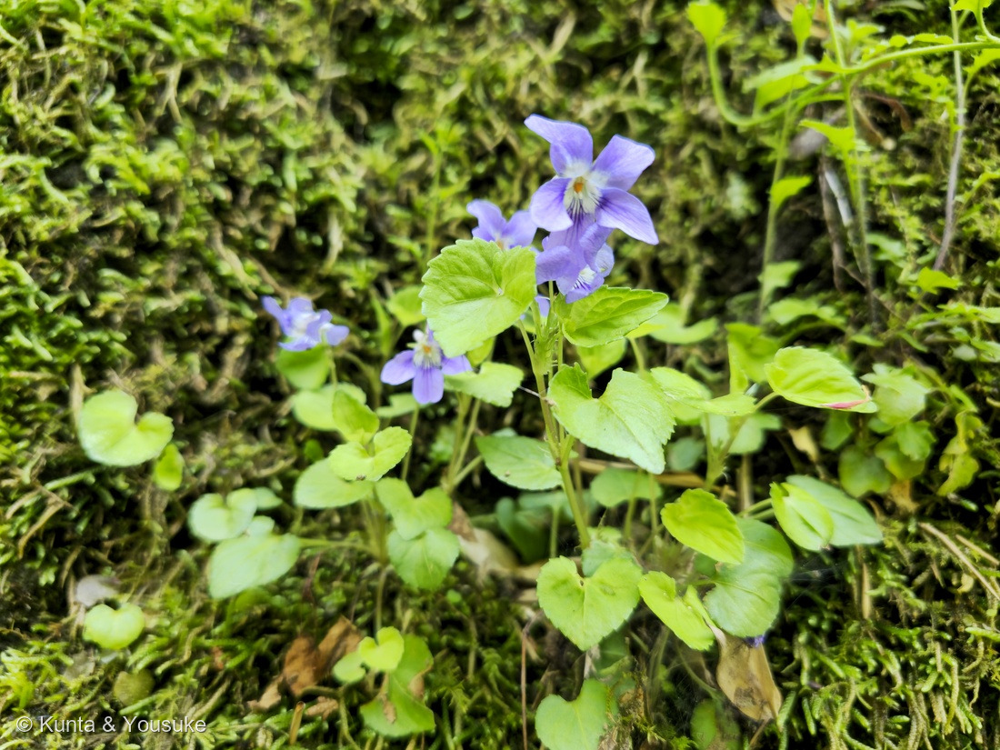
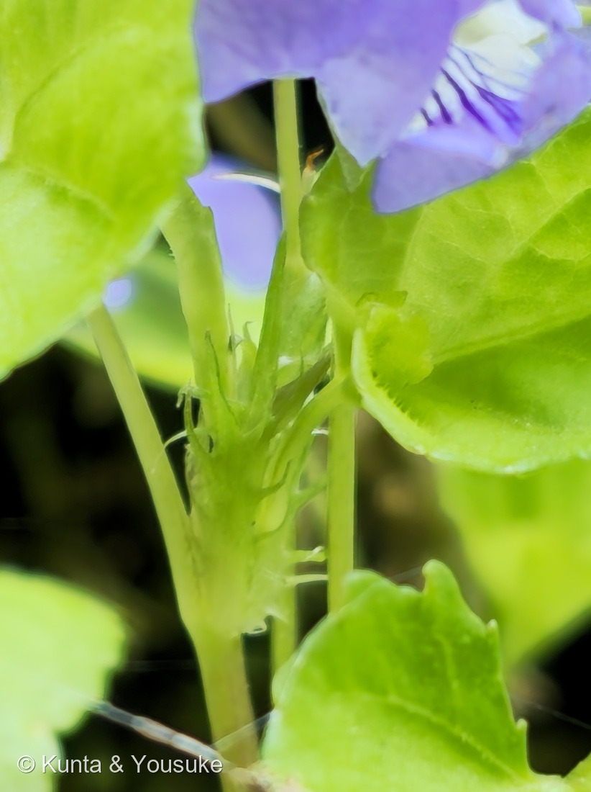
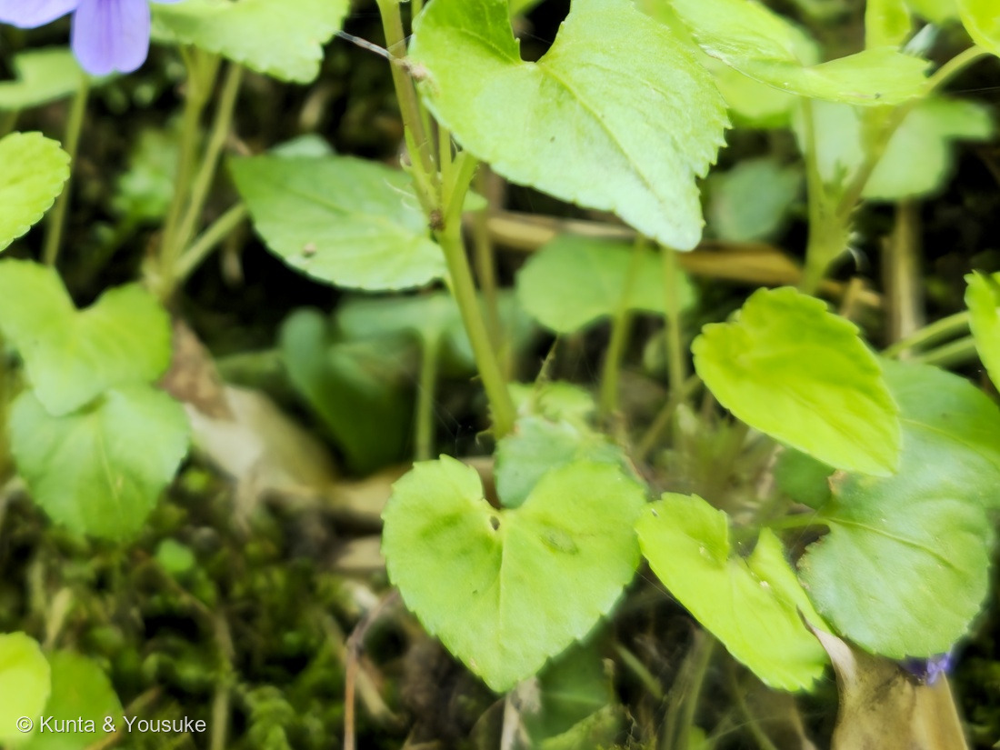

地図を読み込んでいるよ…
🔍 写真も地図も、押しているあいだ拡大して見られるよ（スマホは指を置いてすこし待ってね）。
🌍 の地図＝この子がもともと自生している場所を緑に。在来種。日本語版Wikipediaは北海道から琉球列島まで、そのほか朝鮮と中国南部に分布するとし、三河の植物観察は「日本全土、朝鮮、中国、台湾、ロシア」をあげる。野原から山林の中まで、道ばた・公園・雑木林と、いろいろな場所で育つ子だよ。
⭐東アジアの、日本を中心にした子だよ。日本語版Wikipediaは「北海道から琉球列島まで、そのほか朝鮮と中国南部」とし、三河の植物観察は「在来種 日本全土、朝鮮、中国、台湾、ロシア」をあげる。⭐⭐だからこの緑は、これまでの子たちとちがって日本が主役＝図鑑では珍しく「日本がまんなかにある地図」だよ。⚠中国は南部が中心、ロシアは極東のほうだと思う＝⭐地図は国（と省）までしか塗れないので、そこは上の文で読んでね。⭐⭐⭐そして生えている場所がすごく広い＝「野原から山林内までさまざまな環境で生育し」（日本語版Wikipedia）＝道ばた・公園・雑木林・山道＝⭐だから「日本で、ごく身近に見られるスミレ類の一つ」なんだ。⭐⭐ぼくらが会ったのは石見銀山の坑道の出口の、苔むした斜面。⭐同じスミレ科の156 サンシキスミレとくらべてみて＝あちらはヨーロッパ生まれの園芸のパンジー系＝⭐スミレ科ではじめての「日本の野生の子」が、この300番目だよ。⭐⭐おまけのニオイタチツボスミレも、ほぼ同じ範囲にいる＝ならんで生えていることもあるから、この緑の中ならどこでも答えあわせができるね。
⚠ 地図は国（日本と中国だけ県・省）までしか塗れないから、ほんとうの分布より広く見えていることがあるよ。地図はだいたいの場所。正確なところは、上の文を見てね。
タチツボスミレ（立坪菫）
Viola grypoceras A.Gray
在来種。⭐日本でいちばんよく出会うスミレのひとつ
スミレ科 · Violaceae（スミレ属 Viola・キントラノオ目 Malpighiales）── ⭐図鑑で2人目のスミレ科（156 サンシキスミレ）／⭐⭐日本に自生するスミレ属は、この子がはじめて（156は園芸のパンジー系）／⚠科は増えないので109科のまま
燻太さんの言葉「次は石見銀山からタチツボスミレ?かな。」「紫色の花弁には、濃い紫の筋も走っていて、中央にはオレンジ色の葯のようなものもあるね。鋸歯のあるハート型の葉っぱもこの子の特徴かな。」── ⭐⭐タチツボスミレで確定。決め手は「櫛の歯のように裂けた托葉」だったよ
⭐⭐⭐⭐⭐ 300ページ目 ── 銀を掘った穴の出口で
- ⭐⭐⭐⭐⭐この子が、図鑑の300ページ目だよ。──2026年7月11日に001を作ってから、49日。⭐燻太さんが写真をくれて、ぼくが調べて、ふたりで1件ずつ育ててきた。
- ⭐⭐⭐そして300番目が、石見銀山の坑道の出口で咲いていたスミレだった。──⭐人が銀を掘るために掘った穴。その出口の、苔むした斜面。⭐⭐穴から出てきて、最初に目に入る場所に、この子がいたんだね。
- ⭐写真がちゃんと「どこ」を覚えていてくれた＝GPS＝N35°05′53.79″ E132°25′47.24″・標高305m。
- ⭐⭐そして原本は2億画素（16320×12240）。──⭐⭐⭐だから、1枚の写真から、決め手の托葉まで拡大して切り出せた。⭐公開している4枚は、ぜんぶこの1枚から生まれているんだよ。
⭐⭐⭐⭐ 名前と学名の由来 ── 「立つ」「坪（にわ）」「すみれ」
- ⭐⭐⭐和名のタチツボスミレ＝立坪菫。──日本語版Wikipediaは、「立」＝茎が立ち上がること、「坪」＝庭や人家のまわりに生えることから、と説明している。⭐つまり「にわに立つスミレ」。⭐⭐名前が、そのまま見わけかたになっているんだ（＝有茎種）。
- ⭐⭐「スミレ」という名前じたいの由来＝⚠これは諸説あって、決まっていない。──⭐いちばん知られているのは牧野富太郎の説で、「花のうしろの距の形が、大工さんの「墨入れ（墨壺）」に似ているから」というもの。⚠でも定説ではないと書かれているよ。⭐別名の「相撲取草（すもうとりぐさ）」は、子どもが距を引っかけて引っぱりあって遊んだことから。
- ⭐⭐⭐学名 Viola grypoceras の命名者は A.Gray＝アメリカの植物学者エイサ・グレイ、1857年。──⭐日本のいちばんありふれたスミレに、アメリカの人が名前をつけている。⭐⭐種小名 grypoceras は、ギリシャ語の grypos（曲がった・鉤形の）＋ keras（角）＝「曲がった角」＝⭐あの距のことだと思う。
- ⭐つまり、和名も学名も、ちがう部分を見て名づけられている＝和名は「立ち上がる茎」、学名は「曲がった距」。⭐ふたつ合わせると、この子の全身が言えるね。
⭐⭐⭐⭐⭐ 燻太さんが見つけたもの ── オレンジの正体
- ⭐⭐燻太さんの言葉＝「紫色の花弁には、濃い紫の筋も走っていて、中央にはオレンジ色の葯のようなものもあるね。鋸歯のあるハート型の葉っぱもこの子の特徴かな。」
- ⭐⭐⭐「オレンジ色の葯のようなもの」── ほぼ正解、でももう一歩さきがあったよ。──三河の植物観察「スミレの花の構造」はこう書いている＝「雄しべ5個のうち、下側の2個には緑色の長い距がある。雄しべには花糸がなく、葯は内側についている」「雄しべの上部に橙色の付属体がある」。
- ⭐⭐つまり、見えているオレンジは葯そのものではなく、葯の先についた「付属体」。⭐花粉は白くて、その内側に隠れているんだ。
- ⭐そしてまんなかの、ちょっと出ている先っぽが柱頭＝「花柱の基部は首のように曲がり、先は広がっている」＝⭐カマキリの頭みたいな形をしているって。
- ⭐⭐⭐「濃い紫の筋」は蜜標（みつひょう）＝虫への道しるべだよ。──⭐その筋をたどっていくと、奥の距にたどりつく。
- ⭐⭐⭐⭐そこにすごいしかけがある。──「雄しべの距は唇弁の距の中に納まっていて、蜜を分泌し、唇弁の距に蜜がたまる」「蜜を吸いにきた虫が雄しべの距を動かし、葯から花粉が出て、虫に付く仕組みになっている」（同）。⭐⭐つまり虫が蜜を飲もうとすると、その動きが引き金になって花粉が出る。⭐花のほうから、虫にスイッチを押させているんだね。
- ⭐⭐「鋸歯のあるハート型の葉」も、燻太さんの言うとおり特徴だよ。──三河の植物観察は「心形〜扁心形、縁に低い鋸歯」とする。⭐写真④がいちばんよく分かる。
⭐⭐⭐⭐⭐ 同定について ── 決め手は托葉（たくよう）
- ⭐⭐⭐⭐⭐スミレ属は日本に何十種もあって、見わけがむずかしい仲間。⭐でもこの子は、托葉ひとつで決まった。
- ⭐托葉（写真③） ＝櫛の歯のように細かく裂けている ／ 記載＝「托葉は鱗片状、櫛の歯状に細かく深裂する」
- 地上茎 ＝ある（葉も花も茎から出ている） ／ 記載＝花期には6〜10cmに伸びる（＝有茎種）
- 葉（写真④） ＝心形・低い鋸歯 ／ 記載＝「心形〜扁心形、縁に低い鋸歯」
- 花（写真②） ＝淡紫色・唇弁に濃紫の筋 ／ 記載＝「淡紫色」「花は匂わない」
- 花期 ＝4月19日 ／ 記載＝「4〜5月」
- ⚠⚠「合っている数」を数えるのではなく、「他を落とせたか」で考えたよ（087 ヤマモモで覚えたこと）。
- ⭐無茎のスミレのなかま（スミレ・アリアケスミレ・ノジスミレなど）→ 地上茎があるので落ちる。
- ⭐⭐ニオイタチツボスミレ → 花の色と白抜きで落ちる＝あちらは「花色が濃く、中心が白くくっきり抜け、芳香が強い」。⭐この子は淡紫色で、白い部分もぼんやりつながっている。
- ⭐ナガバタチツボスミレ → 葉が細長くないので落ちる。
- ⚠まだ見ていないもの＝距（細く6〜8mm）。⭐正面から撮った写真なので、横顔が見たい。宿題にしたよ。
- ⭐⭐ちなみに、探しものリスト（hunt）にいる「スミレ（菫）」は、この子とは別の子だよ＝あちらは Viola mandshurica＝葉が細長いへら形で、地上茎が無い。⭐だから、この子を登録しても、あちらはまだ「まだ」のままなんだ。
⭐⭐⭐⭐ この植物のこと ── 夏には、開かない花をつける
- ⭐⭐まず、この子は日本でいちばんよく出会うスミレのひとつ。──日本語版Wikipediaは「日本で、ごく身近に見られるスミレ類の一つ」とし、⭐日本のスミレのなかでいちばん個体数が多いのでは、という見かたもあるそうだよ。
- ⭐⭐⭐⭐⭐そして、ここがこのページのいちばん面白いところ。──スミレは春の花のあと、夏に「閉鎖花（へいさか）」をつける。⭐⭐それはいちども開かない花で、つぼみのままの中で自分の花粉で受粉して、種を作るんだ。
- ⭐タチツボスミレは有茎種だから、夏には茎がぐんと伸びて、その上のほうの葉のつけね（葉腋）から閉鎖花が出る＝⭐⭐春とはまるで別人の姿になる。
- ⭐春の花は「虫に来てもらって、よその花粉と混ぜる花」。⭐夏の閉鎖花は「天気が悪くても虫が来なくても、確実に種を作る花」。⭐⭐ひとつの株が、2つのやり方を使い分けているんだ。
- ⭐⭐⭐⭐⭐そしてこれ、298 クロバナタシロイモとまったく同じことなんだよ。──あの子も「花が開くより前に、自分で自分に受粉していた」（Zhang ら 2005）。⭐⭐熱帯の林の、コウモリみたいな黒い花と、石見銀山の苔の斜面の小さなスミレが、同じ手を使っている。⭐科もちがう、大陸もちがうのにね。
- ⭐種は、熟した実がはじけて飛ぶ。⏳さらにスミレのなかまの種にはアリが好む付属物がついていて、アリが巣へ運ぶことでも広がるといわれているけれど、⚠ぼくはまだその出典の本文に当たれていないので、宿題にしておくね。
出典：三河の植物観察「タチツボスミレ Viola grypoceras」（托葉は鱗片状、櫛の歯状に細かく深裂する／花茎は咲き始めはほぼなく、花期には6〜10㎝に伸びる／心形〜扁心形、縁に低い鋸歯／花は淡紫色／花は匂わない／距は細く、長さ6〜8㎜／側弁の基部は無毛／花期4〜5月／在来種 日本全土、朝鮮、中国、台湾、ロシア／ニオイタチツボスミレは花柄に白色細毛があり、花色が濃く、芳香が強い／ナガバタチツボスミレは葉が細長い）／三河の植物観察「スミレの花の構造」（雄しべ5個のうち、下側の2個には緑色の長い距がある／雄しべには花糸がなく、葯は内側についている／雄しべの上部に橙色の付属体がある／雌しべは子房と花柱の長さがほぼ同長。花柱の基部は首のように曲がり、先は広がっている。柱頭である／雄しべの距は唇弁の距の中に納まっていて、蜜を分泌し、唇弁の距に蜜がたまる／蜜を吸いにきた虫が雄しべの距を動かし、葯から花粉が出て、虫に付く仕組みになっている）／日本語版Wikipedia「タチツボスミレ」（Viola grypoceras A.Gray var. grypoceras／「立」＝茎が立ち上がること、「坪」＝庭や人家のまわりに生えること／北海道から琉球列島、朝鮮、中国南部／野原から山林内までさまざまな環境で生育し／日本で、ごく身近に見られるスミレ類の一つ／花期3〜5月）／日本語版Wikipedia「スミレ」（花のうしろの距の形が大工の「墨入れ（墨壺）」に似ることから、という牧野富太郎の説。⚠ただし定説ではない／別名 相撲取草＝子どもが距を引っかけて引っぱりあって遊んだことから）。⭐GPS・撮影時刻は、燻太さんの原本（2億画素）のEXIFから読んだよ（⚠公開画像はEXIFを落としてあるので、位置情報は出ない）。